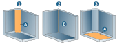
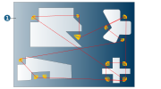
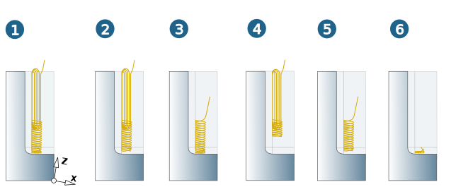
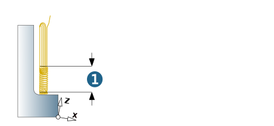
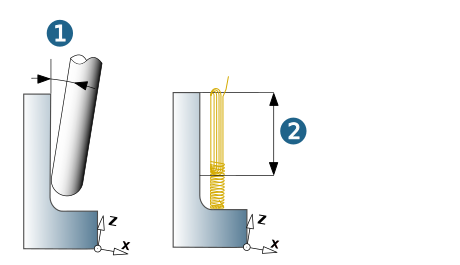
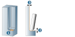
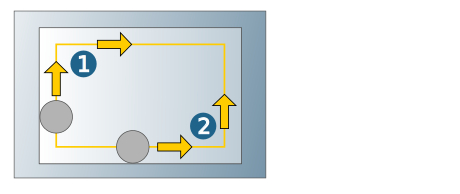
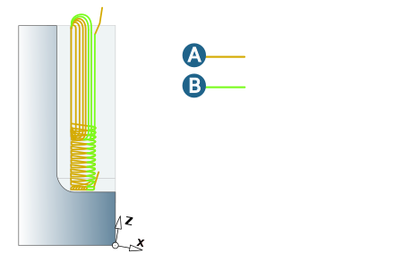
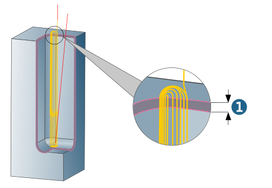

Strategy
Define the machining strategy.
Selection mode
Specify the method for selecting the areas to be machined.
Vertical corner surface (1): Choose this option if the corners to be machined are to be defined using a surface selection.
Vertical corner edge (2): Choose this option if the corners to be machined are to be defined using an edge selection.
Bottom plane (3): Choose this option to machine the border areas of the bottom surface that are adjacent to the vertical corners.
|  |
If Bottom plane has been set as the selection mode, the border areas for the corners are automatically detected and machined, based on the selected bottom plane (1).
|  |
Selection
Select the geometric elements that are to be machined.
Surfaces (A): Select the surfaces to be machined.
Vertical corner edge (B): Select edges to be machined.
Strategy
All (1): Corner, rest material and floor areas are machined.
Corner and restmaterial (2): Only corner and rest material areas are machined.
Restmaterial and bottom (3): Only rest material and floor areas are machined.
Corner only (4): Only corner areas are machined.
Restmaterial only (5): Only rest material areas are machined.
Bottom only (6): Only floor areas are machined.
|  |
Rest material height (1): Define the height of the rest material area with Z Level Machining. Default = diameter of the reference tool.
|  |
Limit parallel strategy / Toolpath fillets
Minimum clearance angle (1): Minimum angle to be maintained between the Z axis of the frame and the orientation of the vertical corner to be machined. Default = 5°. Larger values set for the clearance angle reduce the parallel machining area (2) and smaller values set for the clearance angle enlarge the parallel machining area (2).
|  |
Fillet radius: Abrupt changes in direction within the cutting toolpaths are rounded with the specified radius.
Geometry
Bottom surfaces: (1) Select the bottom surfaces that are adjacent to the rest material areas and whose border areas are to be machined. If required, define an Add. bottom allowance (2) to protect the bottom surfaces. Available for the Restmaterial and bottom and Restmaterial only strategies.
|  |
Cutting mode
Climb milling, Conventional milling: In the case of contour-parallel machining with continuous orientation, the following definitions apply: climb milling and conventional milling relate to clockwise rotating tools. For climb milling with tools rotating clockwise, the following machining directions apply:
(1) Clockwise, (2) Anticlockwise.
|  |
Blending
Smooth overlap: Smooth overlapping of the toolpaths between different machining areas ensures a very high surface quality in the area of transition from the surfaces of the vertical corners to the laterally adjacent surfaces. If the option is enabled, additional toolpaths (B) are added to the standard toolpath (A) in the transition areas.
(A) = Standard toolpath, (B) = Additional toolpath.
|  |
Milling surface extension
Use the Milling surface extension option (1) to protect the edges of the model against rolling movements of the tool. For this purpose, hyperMILL generates extension surfaces that connect to the defined milling surfaces tangentially or in a curvature-constant manner.
Automatic: If this function is enabled, hyperMILL generates the extension surfaces automatically. The length is based on the diameter of the reference tool (diameter * 0.25). When the function is disabled, define the Extension surfaces manually.
The Milling surface extension function is based on the surfaces visible in the graphics area.
|  |